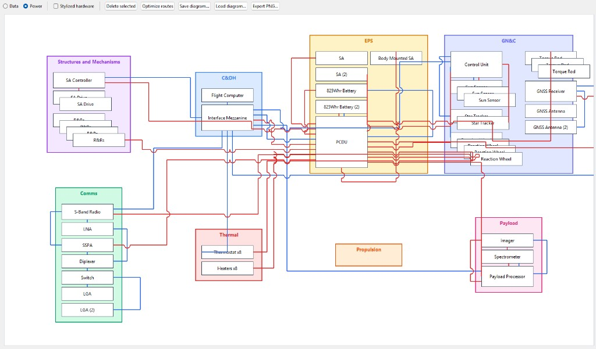
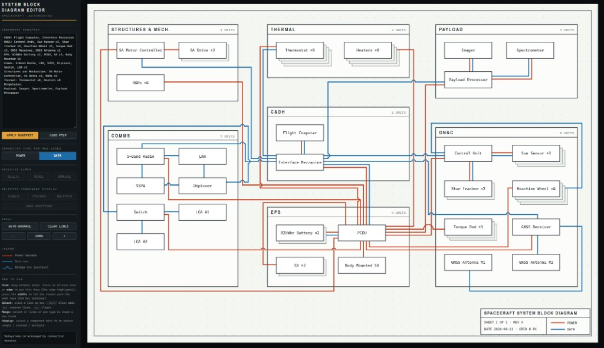

Satblocks
Overview
The block diagram is an archetypal spacecraft systems engineering artifact - it can be remarkably simple, but it allows everyone to grasp the scope of the system immediately. Over the years I have likely made hundreds of them, yet each time I've made one I've found myself fighting the tools. When I started Vesper I knew I wanted it to be able to produce all of the spacecraft systems engineering artifacts that an engineer might need in early spacecraft development. So I set out to make sure anyone could make a better block diagram in Vesper than they could in PowerPoint or Visio. I ended up being so pleased with the result that I decided to release it as a standalone tool as well.
Development
I began working on the builder with an opinionated set of rules for a "good" block diagram. Legibility and simplicity were my two guiding principles, and I developed every requirement around those pillars. Cursory research indicated that the A* search algorithm would be a great fit for the problem. With no experience in diagram development, I turned to LLMs to help me design the system. My (their? our?) initial attempts were functional but graceless; they could not reliably produce diagrams that I would show my colleagues, let alone NASA. But just as I was wrapping up a third abortive attempt, Claude Fable 5 was released.


While Fable did not one-shot the final product, its initial stab was head-and-shoulders above the previous attempts. Over the next three days that Fable was available (6/9/26 - 6/12/26), I was able to bang out the full implementation in Vesper and as a standalone tool.
Implementation
The site is simply a single HTML page with a canvas and a sidebar. Magic is done with the A* algorithm, which is implemented in JavaScript. The version found in Vesper is more extensible - it is able to ingest a project's Master Equipment List (MEL) to populate the diagram and update the diagram in real time as hardware is changed.